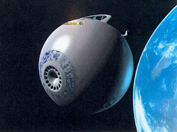
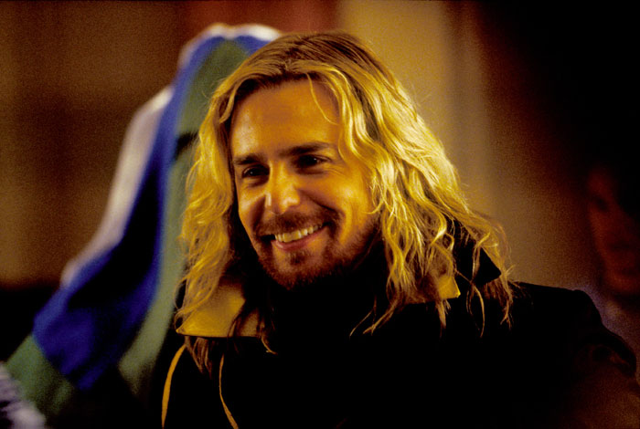
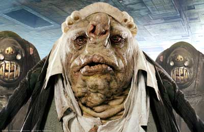
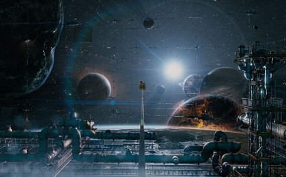
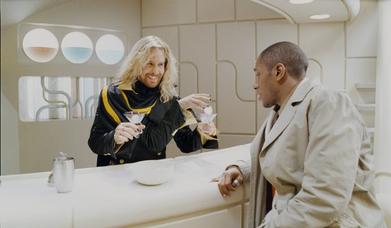
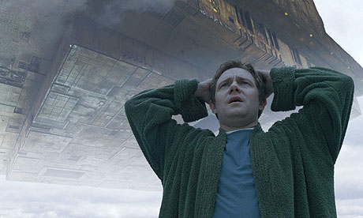
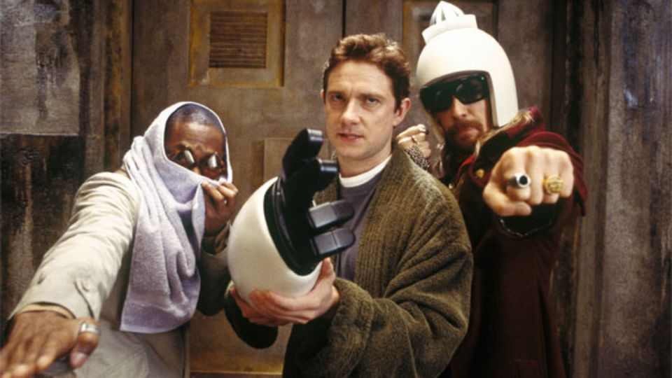
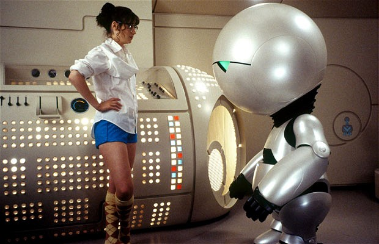
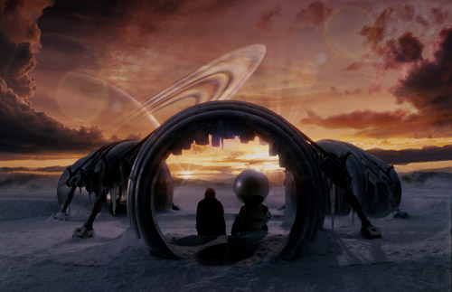

The Heart of Gold is 150 metres long. It is shaped like a running shoe, and it is generally rather white.
The cabin is mostly white, oblong and about the size of a smallish restaurant. It is not, however, perfectly oblong..

Y 2thousand5
The Heart of Gold is commandered by Zaphod Beeblebrox, President of the Galaxy and a shapeshifter, who picks up his semi-cousin, Ford Prefect
and his friend, Arthur Dent.

Y @))%
The reason for the pickup is because Earth is about to be destroyed by Galactic contractors called Vogons, who need the area in which
Earth is located for a hyperspace freeway.

Y two00five
The Heart of Gold, though not a traditional ship, has a form of navigation in which once it comes out of travel, doesn't retain it's original
features, almost like getting a new ship after every large movement.
Y 5dnasuoht2
Zaphod Beeblebrox, at one point admits to Arther, that the reason why Earth was destroyed is because he accidently signed permission for it to be
destroyed, because he thought he was signing and autograph.
Y ?**$
Turns out Zaphod. though telling the truth about being President of the Galaxy, also happens to be clinically insane, and the reason for which
Arther and Ford being picked up so easily, was because Zaphod was kidnapping someone...himself.
Y _^_^_^_
Questular Rontok, Vice President of the Galaxy, realising so much can be done in terms of becoming himself President of the Galaxy, teams up with the
Vogons, in order to rescue Zaphod, but really just wants to kill him.
Y teacrump5
Questular finally catches up with the crew of the Heart of Gold, and starts attacking them, until Marvin, the depressed android, shoots him and the Vogons
with a Point of View gun, in which they all suddenly become depressed just like Marvin, and are unable to fight.
YR ????
Arthur is given the choice to go back to a newly recreated Earth but chooses to stay with the Heart of Gold and go exploring with her crew and his girlfriend Trillian,
they all decided to go to the Restaurant at the Edge of the Galaxy.